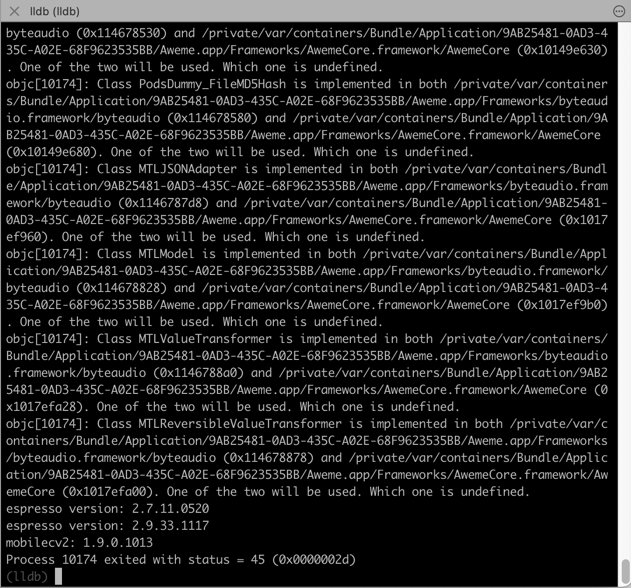
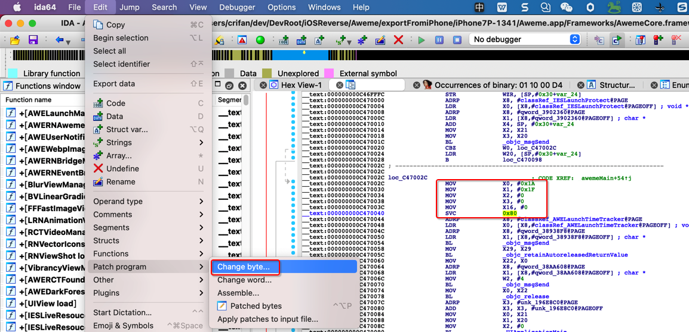
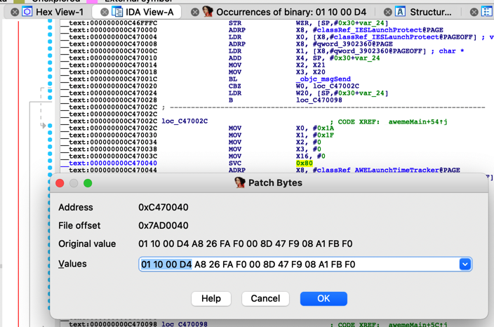
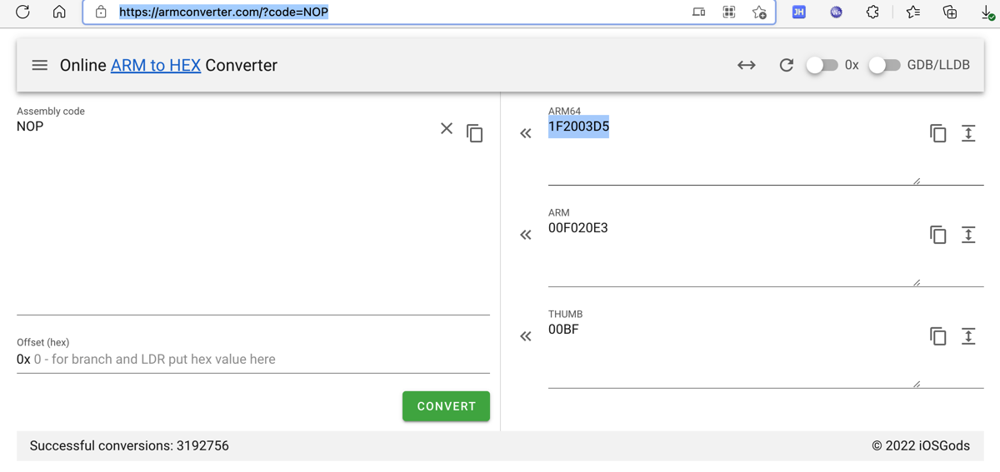
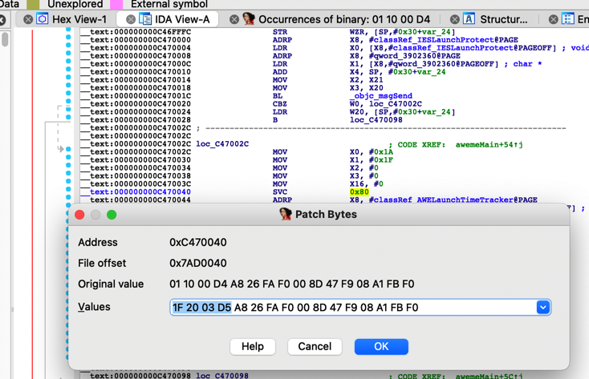
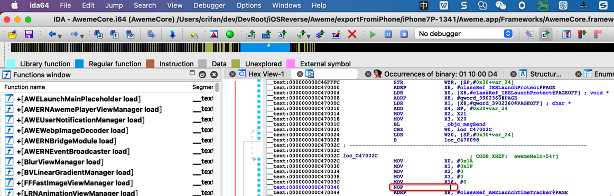
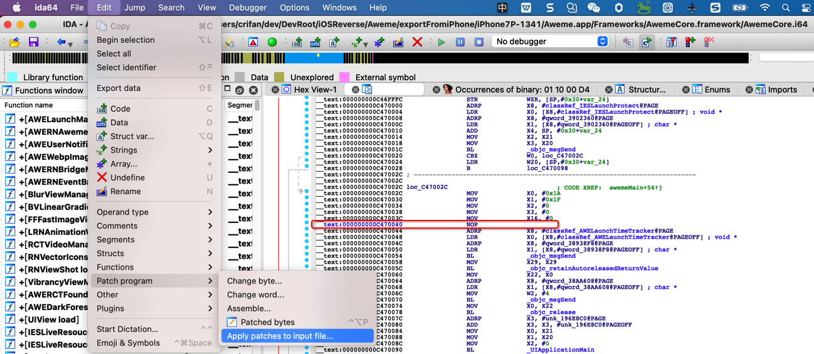
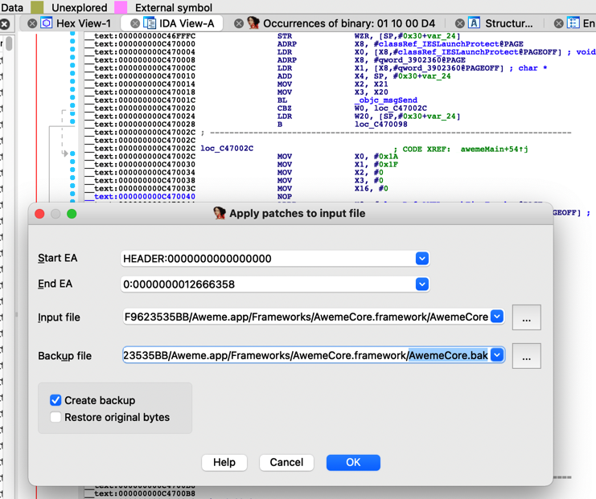

反调试和反反调试举例：抖音
此处以抖音为例，介绍，反调试和反反调试的具体过程：
先去研究清楚，具体对方用了什么反调试手段
Mac中用lldb去调试iPhone中的iOS的app抖音，结果报错：
...
espresso version: 2.7.11.0520
espresso version: 2.9.33.1117
mobilecv2: 1.9.0.1013
Process 10174 exited with status = 45 (0x0000002d)

研究后找到定义：
/System/Library/Frameworks/Kernel.framework/Versions/A/Headers/sys/errno.h- errno.h (apple.com)
#define ENOTSUP 45 /* Operation not supported */
-》
- 45 = ENOTSUP = Operation not supported
- 意思是：lldb调试的操作，不被允许
- 原因：app内部做了反调试
- 那就意味着是
ptrace的PT_DENY_ATTACH的事情了
- 那就意味着是
而实现ptrace的PT_DENY_ATTACH，之前已知有4种方式：
ptraceptrace(PT_DENY_ATTACH, 0, 0, 0);syscall()=syscall+ptrace+PT_DENY_ATTACHsyscall(SYS_ptrace, PT_DENY_ATTACH, 0, NULL, 0);sysctl?svc 0x80+syscall+ptrace=inline asm=ARM汇编mov x0, #26 // ptrace mov x1, #31 // PT_DENY_ATTACH mov x2, #0 mov x3, #0 mov x16, #0 svc #0x80
继续后续调试，找到代码：
__text:000000000C47002C loc_C47002C ; CODE XREF: _awemeMain+54↑j
__text:000000000C47002C MOV X0, #0x1A
__text:000000000C470030 MOV X1, #0x1F
__text:000000000C470034 MOV X2, #0
__text:000000000C470038 MOV X3, #0
__text:000000000C47003C MOV X16, #0
__text:000000000C470040 SVC 0x80

至此，清楚了：
- 抖音的反调试手段
svc 0x80的内联汇编实现的syscall的ptrace的PT_DENY_ATTACH
再去针对性的处理=反反调试
此处，针对：
- 抖音的反调试手段
svc 0x80的内联汇编实现的syscall的ptrace的PT_DENY_ATTACH
去实现：
- 反反调试的抖音的手段
- 把内联的ARM汇编的
svc 0x80指令替换成NOP指令=空指令
- 把内联的ARM汇编的
具体操作：
- 前提：已找到
svc 0x80的ARM汇编指令的位置了- 如果有多处，也要全部都找到
- 思路：借助于IDA实现指令替换，把
svc 0x80相关指令，替换成NOP指令 - 步骤：
IDA Pro->鼠标停留=选中对应的要修改的汇编代码（所在的行）->Edit->Patch Program->Change byte:

会出现：
- ARM汇编指令：
svc 0x80对应的二进制=bytecode=字节码：01 10 00 D4

此处借助于：
去搞清楚：
要替换成的：
- NOP指令
- （ARM的
ARM64的，此处的端是：Little Endian）- 对应的字节码=bytecode：
1F 20 03 D5- 
- 对应的字节码=bytecode：
- （ARM的
即，把：01 10 00 D4改为1F 20 03 D5

点击OK，即可修改成功：

再去保存，保存到原输入文件：

此处，为了更好保留原文件，点击勾选：Create backup

会自动生成 xxx.bak
Aweme.app/Frameworks/AwemeCore.framework/AwemeCoreAweme.app/Frameworks/AwemeCore.framework/AwemeCore.bak

确认文件的确已变化：
➜ AwemeCore.framework pwd
/Users/crifan/dev/DevRoot/iOSReverse/Aweme/exportFromiPhone/iPhone7P-1341/Aweme.app/Frameworks/AwemeCore.framework
➜ AwemeCore.framework ls -l
total 18632888
-rw-r--r-- 1 crifan staff 240666608 1 8 09:43 AwemeCore
-rw-r--r-- 1 crifan staff 240666608 1 5 15:00 AwemeCore.backup
-rw-r--r-- 1 crifan staff 240666608 1 8 09:43 AwemeCore.bak
...
->
AwemeCore240666608
AwemeCore.bak240666608
-》文件大小没变，最后改动时间变了。
另外，再去：拷贝到iPhone7中，重新调试。
最终效果：
去掉反调试后，可以正常用debugserver+lldb去调试启动抖音了：